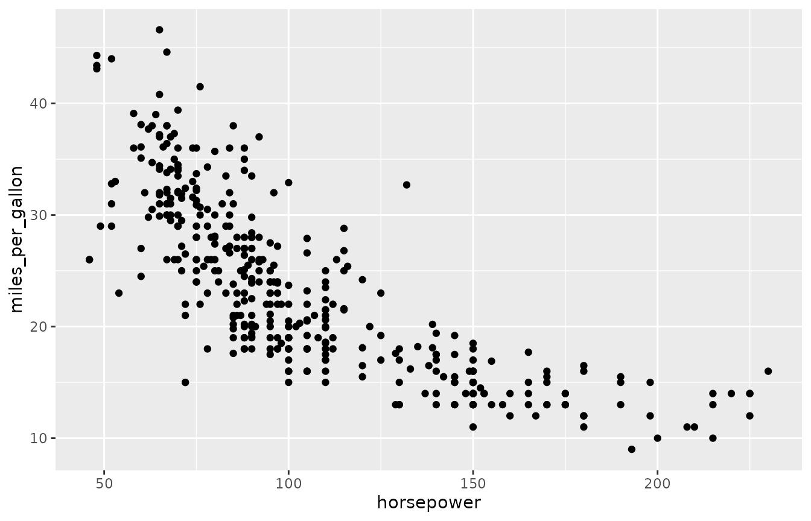
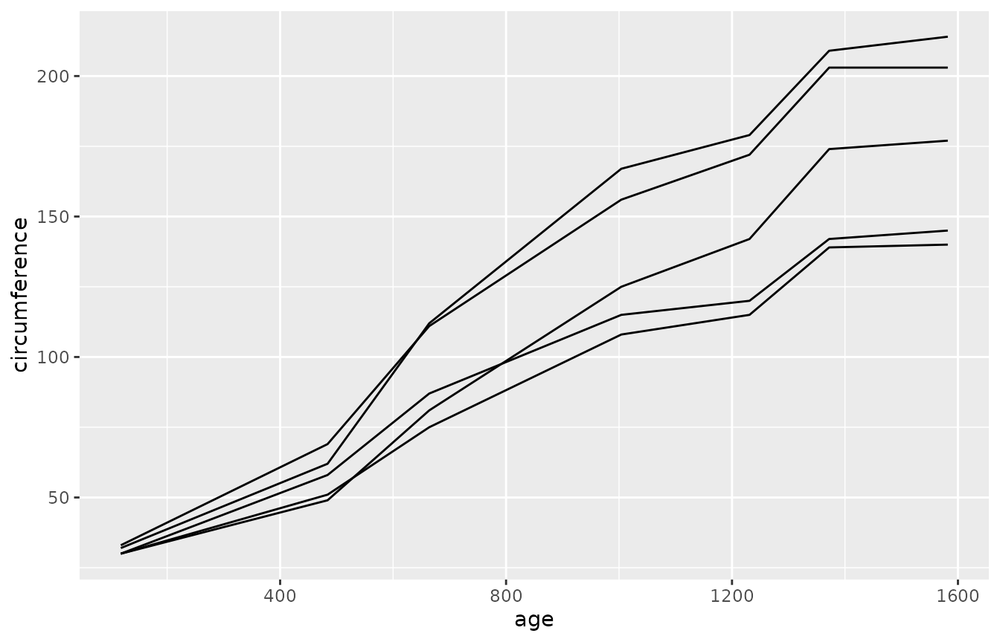

Database Setup
The examples on this page will use an in-memory DuckDB database loaded with data. Multiple datasets are used and the page is organized by the dataset being analyzed.
Cars
Setup
dbWriteTable(con, "cars", cars)
dbGetQuery(con, "select * from cars limit 5")
#> car_id horsepower miles_per_gallon origin year
#> 1 1 130 18 USA 1970
#> 2 2 165 15 USA 1970
#> 3 3 150 18 USA 1970
#> 4 4 150 16 USA 1970
#> 5 5 140 17 USA 1970Example Plots
dbGetPlot(con, "
visualize
horsepower as x,
miles_per_gallon as y
from cars
using points
")
#> Warning: Removed 14 rows containing missing values or values outside the scale range
#> (`geom_point()`).
Trees
Setup
dbWriteTable(con, "trees", trees)
dbGetQuery(con, "select * from trees limit 5")
#> tree_id age circumference
#> 1 1 118 30
#> 2 1 484 58
#> 3 1 664 87
#> 4 1 1004 115
#> 5 1 1231 120Example Plots
dbGetPlot(con, "
visualize
age as x,
circumference as y
from trees
collect by
tree_id
using lines
")